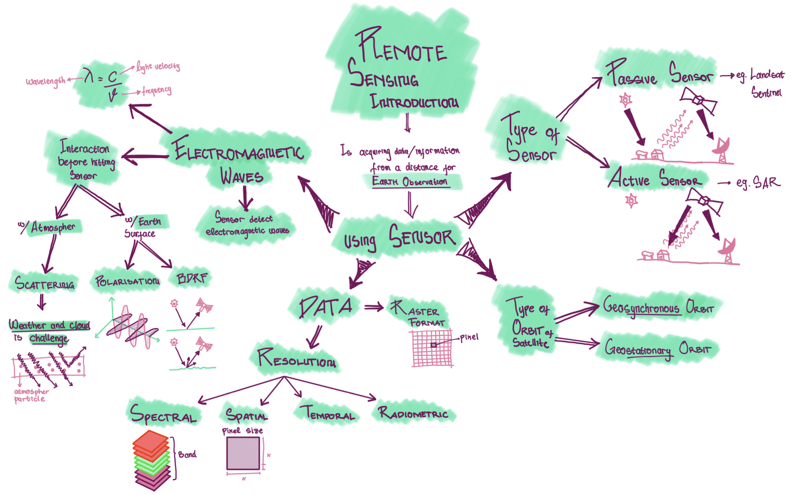
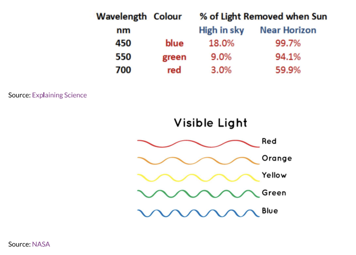
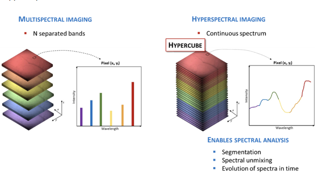
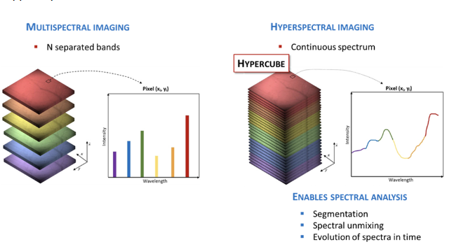

1 week 01 - Remote Sensing Introduction
1.1 Summary
Remote sensing is acquiring data or information from a distance. In this module, context we use remote sensing for Earth Observation (EO). This can be done by using sensor mounted on satelite.
In this week we will talk general topic about sensor and satellite on on earth observation. It can be seen in the mind map that there will be 4 subtopics to make us easier understanding Sensor, which are:
Types of Sensor
Passive Sensor
Active Sensor
Electromagnetic waves or radiation (EMR)
EMR interaction with atmosphere before hitting sensor
EMR interaction with earth surface before hitting sensor
Type or satellite orbit
Geosynchronous Orbit
Geostationary Orbit
Data produced by sensor
Raster Data Format
Resolution
Spectral
Spatial
Temporal
Radiometric
Check the mind map to understand the outline of this week’s topic

1.1.1 Types of Sensor
1.1.1.1 Passive Sensor
- Use electromagnetic waves from sun-ray as source of energy.
- Detect reflected energy from the sun that has different wavelength to detect different colour spectrum
- Such as:
- sentinel
- landsat

1.1.1.2 Active Sensor
- Have an energy source for Illumination
- Actively emits electromagnetics wave and then wait to rceive
- Such as:
- Synthetic-aperture Radar (SAR),
- X-ray,
- LiDAR

1.1.2 Electro Magnetic waves
- is waves that have both eletric and magentic field, produce by vibration of particles
- EM waves move in vacuum
- Perpendicular electric and magnetic field
- different wavelength causes different colour spectrum. That’s why we can see colourful image

1.1.2.1 Terms
- Electromagnetic radiation (EMR) = Waves of an electromagnetic field, travel through space and carry radiant energy
- Radiant Energy = energy carried by EMR Waves
- Radian flux = Energy per unit of time
- Exitance emittance (per unit time
- flux) = energy leaving a surface per unit area per unit time - Flux = time
1.1.2.2 Electromagnetric Radiaton (EMR) interaction
- Before hitting hitting the sensor, energy from electromagnetic radiation will interacting with:
- atmosphere
- scattered by atmosphere particle
- earth’s surface
- absorbed
- transmitted
- atmosphere
1.1.2.2.1 Atmospheric Scattering
Electromagnetic waves are scatters by particles on the atmosphere

Smaller wavelengths scatter easier
Blue has the smallest wavelength 
type of scattering:
- Rayleigh is when particles are very small compared to the wavelength.
- eg: sky looks blue because sunray scattered by particles. in sunset or sunrise is much more atmosphere to pass throught so more scattered. When sun’s angle change the blue light scatter does not reach our eyes as the distance is increased, so longer wavelength like red and orange reach us
- Mie is when particles are same size compared to the wavelength
- Non Selective is when particles are much larger compared to the wavelength
- Rayleigh is when particles are very small compared to the wavelength.
drawback of passive sensor is that it could not pass through cloud
1.1.2.2.2 Bidirectional Documented Surface Interaction (BDRF)
- happens because sensor and illumination (sun) angles can change.
- It can cause
- backscattering (left): sun behind the sensor, bright region at sensor and sun side
- forwards scattering (right): sun opposite satelite, shadow region at sensor side
“There are many interaction that influence the data being created because it’s not merely say that energy from sun is reflected by earth to sensor (but there are may factor such as scattering and interaction with surface)”
1.1.3 Types of orbit
- Geosynchronous Orbit (GSO)
- satelite matches the earth’s rotation, usually for sensor
- Geostationary Orbit
- satelite holds same position, usually only for communication

1.1.4 Data
1.1.4.1 Raster Format
- Satellite sensor produces raster imagery data. Raster image is a graphic repesented as a rectangular matrix or grid of square pixels.

1.1.4.2 Four Data Resolution
1.1.4.2.1 Spatial
- Spatial resolution is the size of the raster grid per pixel. The smaller the grid means the higher the resolution be so the clearer the image be
- smallest grid is 10cm
1.1.4.2.2 Temporal
- Temporal resolution is showing how often the data being updated
1.1.4.2.3 Radiometric
- Radiometric is identified differences in light or reflectance, in practice this is the range of possible values. or the ability od a sensor to identify and show small difference in energy.
- The higher the bit, the more sensitive and the more information
- however, the lower the radiometric resolution, the higher possibility to differentiate features
1.1.4.2.4 Spectral
- this concept similar to pixel concept in digital camera where different colour (called band) is stacked together so it makes a new colour combination.

source: The hype in spectral imaging | Spectroscopy Europe/World
- spectral resolution based on number of bands being observed
 - We can take values for each wavelength (or a band of several wavelengths) across the electromagnetic spectrum to create a spectral signature. different feature on earth has different spectral signature, it will be used to identify different object. spectral signature can be discrete (eg. multispectral) or continuous (eg. hyperspectral)  - This spectral signature are used to differentiate object in the image. In earth observation we use this for identifying land cover in earth surface using Normalized Difference Vegetation Index (NDVI), Normalized Difference Building Index (NDBI) - for example in this week practical we identify the landcover by making scatter plot with band 4 (red, vegetation absorb) and band 8 (Near-Infrared, NIR, that vegetation strongly reflect). high values of NIR and low values of red represents dense vegetation. Meanwhile low values of red and NIR represent dense vegetation
- We can take values for each wavelength (or a band of several wavelengths) across the electromagnetic spectrum to create a spectral signature. different feature on earth has different spectral signature, it will be used to identify different object. spectral signature can be discrete (eg. multispectral) or continuous (eg. hyperspectral)  - This spectral signature are used to differentiate object in the image. In earth observation we use this for identifying land cover in earth surface using Normalized Difference Vegetation Index (NDVI), Normalized Difference Building Index (NDBI) - for example in this week practical we identify the landcover by making scatter plot with band 4 (red, vegetation absorb) and band 8 (Near-Infrared, NIR, that vegetation strongly reflect). high values of NIR and low values of red represents dense vegetation. Meanwhile low values of red and NIR represent dense vegetation 
1.2 Application
The increasing satellite remote sensing data on earth observation in the last two decades, allows new approaches on understanding urban setting (Miller and Small, 2003). Satellite remote sensing data offers some advantages, such as: - broader spatial coverage, - ability for routine update, - consistent measurement
Combination of remote sensing data with census data or other government data can provide us useful information such as, urban growth, urban heat island, and socioeconomic activities. We will discuss some application examples of remote sensing data, classified based on sensor type.
1.2.1 Active Sensor
1.2.1.1 Population Size estimation using Synthetic Aperture Radar (SAR)
Different from passive sensor, Synthetic Aperture Radar (SAR) is an active sensor that can see through cloud and the backscatter radar wave can determine physical properties such as density and surface texture (Henderson and Zong-Guo Xia, 1997). The ability of SAR to detect horizontal and vertical structure allows to detect settlement based on texture, materials geometry and density. The result of settlement detection can be used for estimating city population by multiplying with number of occupants per dwelling. Harris (1985) used this methods for estimating population in Tunisia.
This methods is beneficial for developing countries because they have more informal types of dwellings. Radar Data is really helpful because population census happens only once in 10 years (Henderson and Zong-Guo Xia, 1997) which could not keep up the rapid urban growth.
1.2.2 Passive Sensor
1.2.2.1 Evaluating Poverty using Nighttime Light (NTL) Satellite
Nighttime Light Satellite is a passive sensor launched by nasa to collect data of night light emission (Earth Science Data Systems, 2021). The data from this satellite provide unique perspective that can be beneficial for detecting global conflict, human night behaviour, ecological impact of artificial night light and so on.
One of the benefit of nighttime light data is to track socioeconomic inequality and poverty. Yu (2015) evaluated poverty rate in 2856 counties in china. The research compare the average light index from Visible Infrared day-night band with integrated poverty index. It used linear regression and comparison of class to check how accurate the remote sensing data to evaluate poverty. The result shows that day-night band data can be useful to evaluate poverty in china
1.3 Reflection
The increase of remote sensing data on earth observation helps researcher, policy makers, and local government to understand the urban context better. Special characteristic of remote sensing data allows us to have broader perspectives and collect spatial improvement from time to time which could not be provided by tradisional population census data.
In the application we can combine the remote sensing data with census data to have more robust analysis.
Although, using remote sensing data looks more fancy, in some cases and context we can get the similar data that are more efficient and cost effective from governmental source [miller_cities_2003]. For example we can use building permission data rather than satellite data to identify land use.
Moreover, managing remote sensing data require higher skill than traditional data. It can be an obstacle for cities that has limited resources